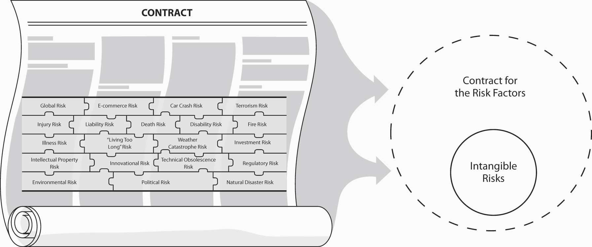

The insurance contract (or policy)Document received when one transfer risks to the insurance company; is the only physical product received at the time of the transaction. we receive when we transfer risk to the insurance company is the only physical product we receive at the time of the transaction. As described in the Risk Ball Game in Chapter 1 "The Nature of Risk: Losses and Opportunities", the contract makes the exchange tangible. Now that we have some understanding of the nature of risk and insurance, insurance company operations, markets, and regulation, it is time to move into understanding the contracts and the legal doctrines that influence insurance policies. Because contracts are subject to disputes, understanding their nature and complexities will make our risk management activities more efficient. Some contracts explicitly spell out every detail, while other contracts are considered incomplete and their interpretations are subject to arguments.The origin of the analysis of the type of contracts is founded in transaction cost economics (TCE) theory. TCE was first introduced by R. H. Coase in “The Nature of the Firm,” Economica, November 1937, 386–405, reprinted in Oliver E. Williamson, ed., Industrial Organization (Northampton, MA: Edward Elgar Publishing, 1996); Oliver E. Williamson, The Economic Institution of Capitalism (New York: Free Press, 1985); application to insurance contracts developed by Etti G. Baranoff and Thomas W. Sager, “The Relationship Among Asset Risk, Product Risk, and Capital in the Life Insurance Industry,” Journal of Banking and Finance 26, no. 6 (2002): 1181–97. For example, in a health contract, the insurer promises to pay for medicines. However, as new drugs come to market every day, insurers can refuse to pay for an expensive new medication that was not on the market when the contract was signed. An example is Celebrex, exalted for being easier on the stomach than other anti-inflammatory drugs and a major favorite of the “young at heart” fifty-plus generation. Many insurers require preauthorization to verify that the patient has no other choices of other, less expensive drugs.Testimonials and author’s personal experience. The evolution of medical technology and court decisions makes the health policy highly relational to the changes and dynamics in the marketplace. Relational contractsContracts whose provisions are dynamic with respect to the environment in which they are executed., we can say, are contracts whose provisions are dynamic with respect to the environment in which they are executed. Some contracts are known as incomplete contractsContracts that contain terms that are implicit rather than explicit. because they contain terms that are implicit, rather than explicit. In the previous example, the dynamic nature of the product that is covered by the health insurance policy makes the policy “incomplete” and open to disputes. Fallen Celebrex rival, Vioxx, is a noted example. New Jersey–based Merck & Co., Inc., faces more than 7,000 lawsuits claiming that its blockbuster drug knowingly increased risk of heart attack and stroke. This chapter also delves into the structure of insurance contracts in general and insurance regulations as they all tie together. We will explore the following:
At this point in the text, we are still focused on broad subject matters that connect us to our holistic risk and risk management puzzle. We are not yet drilling down into specific topics such as homeowner’s insurance or automobile insurance. We are still in the big picture of understanding the importance of clarity in insurance contracts and the legal doctrines that influence those contracts, and the agents or brokers who deliver the contracts to us. If you think about the contracts like the layers of an onion that cover the core of the risk, you can apply your imagination to Figure 9.1 "Links between the Holistic Risk Picture, the Insurance Contract, and Regulation".The idea of using Risk Balls occurred to me while searching for ways to apply transaction costs economic theory to insurance products. I began thinking about the risk embedded in insurance products as an intangible item separate from the contract that completes the exchange of that risk. The abstract notion of risk became the intangible core and the contract became the tangible part that wraps itself around the core or risk. We know now that each risk can be mitigated by various methods, as discussed in prior chapters. The important point here is that each activity is associated with legal doctrines culminating in the contracts themselves. The field of risk and insurance is intertwined with law and legal implications and regulation. No wonder the legal field is so connected to the insurance field as well as many pieces of legislation.
Figure 9.1 Links between the Holistic Risk Picture, the Insurance Contract, and Regulation
Source: Etti G. Baranoff, “The Risk Balls Game: Transforming Risk and Insurance Into Tangible Concepts,” Risk Management & Insurance Review 4, no. 2 (2001): 51–59.
You, the student, will learn in this text that the field of insurance encompasses many roles and careers, including legal ones. As the nature of the contract, described above, becomes more incomplete (less clear or explicit), more legal battles are fought. These legal battles are not limited to disputes between insurers and insureds. In many cases, the agents or brokers are also involved. This point is emphasized in relation to the dispute over the final settlement regarding the World Trade Center (WTC) catastrophe of September 11, 2001.This issue was discussed at length in all financial magazines and newspapers since September 11, 2001. The case at hand was whether the collapse of the two towers should be counted as one insured event (because the damage was caused by a united group of terrorists) or two insured events (because the damage was caused by two separate planes some fifteen minutes apart). Why is this distinction important? Because Swiss Re, one of the principal reinsurers of the World Trade Center, is obligated to pay damages up to $3.5 billion per insured event. The root of the dispute involves explicit versus incomplete contracts, as described above. The leaseholder, Silverstein Properties, claimed that the broker, Willis Group Holdings, Ltd., promised a final contract that would interpret the attack as two events. The insurer, Swiss Re, maintained that it and Willis had agreed to a type of policy that would explicitly define the attack as one event. Willis was caught in the middle and, as you remember, brokers represent the insured. Therefore, a federal judge had to choose an appropriate way to handle the case. The final outcome was that for some insurers, the event was to be counted as two events.The December 9, 2004, BestWire article, “Tale of Two Trials: Contract Language Underlies Contradictory World Trade Center Verdicts,” explains that “the seemingly contradictory jury verdicts from two trials as to whether the Sept. 11, 2001, destruction of the World Trade Center was one event or two for insurance purposes is not so surprising when the central question in both trials is considered: Did the language in the insurance agreements adequately define what an occurrence is?” http://www3.ambest.com/Frames/FrameServer.asp?AltSrc =23&Tab=1&Site=news&refnum=70605 (accessed March 7, 2009). This story is only one of many illustrations of the complexities of relationships and the legal doctrines that are so important in insurance transactions.
In this section we elaborate on the following:
Insurance is sold primarily by agents. The underlying contract, therefore, is affected significantly by the legal authority of the agent, which in turn is determined by well-established general legal rules regarding agency.
The law of agencyLaw that deals basically with the legal consequences of people acting on behalf of other people or organizations., as stated in the standard work on the subject, “deals basically with the legal consequences of people acting on behalf of other people or organizations.”J. Dennis Hynes, Agency and Partnership: Cases, Materials and Problems, 2nd ed. (Charlottesville, VA: The Michie Company, 1983), 4. Agency involves three parties: the principal, the agent, and a third party. The principalIndividual who creates an agency relationship with a second party by authorizing him or her to make contracts with third parties (policyholders) on the principal’s behalf. (insurer) creates an agency relationship with a second party by authorizing him or her to make contracts with third parties (policyholders) on the principal’s behalf. The second party to this relationship is known as the agentIndividual who is authorized to make contracts with a third party., who is authorized to make contracts with a third party.It is important to note the difference between an agent who represents the insurer and a broker who represents the insured. However, because of state insurance laws, in many states brokers are not allowed to operate unless they also obtain an agency appointment with an insurer. For details, see Etti G. Baranoff, Dalit Baranoff, and Tom Sager, “Nonuniform Regulatory Treatment of Broker Distribution Systems: An Impact Analysis for Life Insurers,” Journal of Insurance Regulations19, no. 1 (2000): 94. The source of the agent’s authority is the principal. Such authority may be either expressed or implied. When an agent is appointed, the principal expressly indicates the extent of the agent’s authority. The agent also has, by implication, whatever authority is needed to fulfill the purposes of the agency. By entering into the relationship, the principal implies that the agent has the authority to fulfill the principal’s responsibilities, implying apparent authorityThe implied authority of the agent to fulfill the principal’s responsibilities.. From the public’s point of view, the agent’s authority is whatever it appears to be. If the principal treats a second party as if the person were an agent, then an agency is created. Agency law and the doctrines of waiver and estoppel have serious implications in the insurance business.
The law of agency is significant to insurance in large part because the only direct interaction most buyers of insurance have with the insurance company is through an agent or a broker, also called a producerAnother name for both agents and brokers. (see the National Association of Insurance Commissioners’ Web site at http://www.naic.org and licensing reforms as part of the Gramm-Leach-Bliley Act prerequisites discussed in Chapter 8 "Insurance Markets and Regulation").Steven Brostoff, “Agent Groups Clash On License Reform,” National Underwriter Online News Service, June 20, 2002. Laws regarding the authority and responsibility of an agent, therefore, affect the contractual relationship.
One of the most important agency characteristics is binding authority. In many situations, an agent is able to exercise binding authorityAuthority that secures (binds) coverage for an insured without any additional input from the insurer., which secures (binds) coverage for an insured without any additional input from the insurer. The agreement that exists before a contract is issued is called a binderThe agreement that exists before a contract is issued.. This arrangement, described in the offer and acceptance section presented later, is common in the property/casualty insurance areas. If you call a GEICO agent in the middle of the night to obtain insurance for your new automobile, you are covered as of the time of your conversation with the agent. In life and health insurance, an agent’s ability to secure coverage is generally more limited. Rather than issuing a general binder of coverage, some life insurance agents may be permitted to issue only a conditional binder. A conditional binderAgreement that implies that coverage exists only if the underwriter ultimately accepts (or would have accepted) the application for insurance. implies that coverage exists only if the underwriter ultimately accepts (or would have accepted) the application for insurance. Thus, if the applicant dies prior to the final policy issuance, payment is made if the applicant would have been acceptable to the insurer as an insured. The general binder, in contrast, provides coverage immediately, even if the applicant is later found to be an unacceptable policyholder and coverage is canceled at that point.
The agent’s relationship between the insured and the insurer is greatly affected by doctrines of waiver and estoppel.
WaiverThe intentional relinquishment of a known right. is the intentional relinquishment of a known right. To waive a right, a person must know he or she has the right and must give it up intentionally. If an insurer considers a risk to be undesirable at the time the agent assumes it on behalf of the company, and the agent knows it, the principal (the insurer) will have waived the right to refuse coverage at a later date. This situation arises when an agent insures a risk that the company has specifically prohibited.
Suppose, for example, that the agent knew an applicant’s seventeen-year-old son was allowed to drive the covered automobile and also knew the company did not accept such risks. If the agent issues the policy, the company’s right to refuse coverage on this basis later in the policy period has been waived.
In some policies, the insurer attempts to limit an agent’s power to waive its provisions. A business property policy, for example, may provide that the terms of the policy shall not be waived, changed, or modified except by endorsement issued as part of the policy.
Unfortunately for the insurer, however, such stipulations may not prevent a waiver by its agent. For example, the business property policy provides that coverage on a building ceases after it has been vacant for over sixty days. Let’s suppose that the insured mentions to the agent that one of the buildings covered by the policy has been vacant sixty days, but also adds that the situation is only temporary. If the agent says, “Don’t worry, you’re covered,” the right of the insurer to deny coverage in the event of a loss while the building is vacant is waived. The policy may provide that it cannot be orally waived, but that generally will not affect the validity of the agent’s waiver. From the insured’s point of view, the agent is the company and the insurer is responsible for the agent’s actions.
This point came to a head in the mid-1990s when many life insurance companies were confronted by class-action lawsuits that accused their agents of selling life insurance as a private pensionWhen the investment portion or cash accumulation of a permanent life insurance policy is elevated to a position of a retirement account.Donald F. Cady, “‘Private Pension’ Term Should Be Retired,” National Underwriter, Life & Health/Financial Services Edition, March 1, 1999.—that is, when the investment portion or cash accumulation of a permanent life insurance policy is elevated to a position of a retirement account. There were also large numbers of complaints about misrepresentation of the interest rate accumulation in certain life insurance policies called universal life, which was discussed at length in Chapter 1 "The Nature of Risk: Losses and Opportunities".Allison Bell, “Met Settles Sales Practices Class Lawsuits,” National Underwriter, Life & Health/Financial Services Edition, August 23, 1999. The allegations were that insurers and their agents “furnished false and misleading illustrations to whole life insurance policyholders, failing to show that policies would need to be active over twenty years to achieve a ‘comparable interest rate’ on their premium dollars and used a ‘software on-line computer program’ and other misleading sales materials to do so.”Diane West, “Churning Suit Filed Against NW Mutual,” National Underwriter, Life & Health/Financial Services Edition, October 14, 1996. These were dubbed vanishing premiums policiesPolicies that policyholders were led to believe would be paid in full after a certain period of time, and they would no longer have to make premium payments. because the policyholders were led to believe that after a certain period of time, the policy would be paid in full, and they would no longer have to make premium payments.James Carroll, “Holding Down the Fort: Recent Court Rulings Have Shown Life Insurers That They Can Win So-called ‘Vanishing-Premium’ Cases,” Best’s Review, September 2001. Though no vanishing-premium case has been tried on the merits, litigation costs and settlement proceedings have cost companies hundreds of millions of dollars. Many large insurers such as Prudential, Met Life,Amy S. Friedman, “Met Life Under Investigation in Connecticut,” National Underwriter, Life & Health/Financial Services Edition, January 26, 1998. Money, Northwestern Life, Life of Virginia, and more were subject to large fines by many states’ insurance regulators and settled with their policyholders. Prudential’s settlement with 8 million policyholders will cost the company more than $3.5 billion.Lance A. Harke and Jeffrey A. Sudduth, “Declaration of Independents: Proper Structuring of Contracts with Independent Agents Can Reduce Insurers’ Potential Liability,” Best’s Review, February 2001.
Many of these companies created the new position of compliance officerIndividual charged with overseeing all sales materials and ensuring compliance with regulations and ethics., who is charged with overseeing all sales materials and ensuring compliance with regulations and ethics.Barbara Bowers, “Higher Profile: Compliance Officers Have Experienced Elevated Status Within Their Companies Since the Emergence of the Insurance Marketplace Standards Association,” Best’s Review, October 2001, http://www3.ambest.com/Frames/FrameServer.asp?AltSrc=23&Tab=1&Site=bestreview&refnum=13888 (accessed March 7, 2009); and “Insurance Exec Points to Need For Strong Ethical Standards,” National Underwriter Online News Service, May 19, 2005. Meanwhile, states focused on modifying and strengthening market conduct regulations. See the box Note 9.19 "Enforcing the Code—Ethics Officers" for a review of insurers’ efforts regarding ethics and for ethical discussion questions. Ultimately, the insurer may hold the agent liable for such actions, but with respect to the insured, the insurer cannot deny its responsibilities. “The vexing problem of vanishing premiums has proven to be an expensive lesson for insurance companies on the doctrine of respondeat superiorA Latin phrase referring to the doctrine that the master is responsible for the actions taken by his or her servant during the course of duty.—a Latin phrase referring to the doctrine that the master is responsible for the actions taken by his or her servant during the course of duty.”Lance A. Harke and Jeffrey A. Sudduth, “Declaration of Independents: Proper Structuring of Contracts with Independent Agents Can Reduce Insurers’ Potential Liability,” Best’s Review, February 2001. Neither insurers nor regulators consider an agency relationship as an independent contractor relationship.
EstoppelSituation that occurs when the insurer or its agent has led the insured into believing that coverage exists, and as a consequence, it means that the insurer cannot later claim that no coverage existed. occurs when the insurer or its agent has led the insured into believing that coverage exists and, as a consequence, the insurer cannot later claim that no coverage existed. For example, when an insured specifically requests a certain kind of coverage when applying for insurance and is not told it is not available, that coverage likely exists, even if the policy wording states otherwise, because the agent implied such coverage at the time of sale, and the insurer is estopped from denying it.
An agency relationship may be created by estoppel when the conduct of the principal implies that an agency exists. In such a case, the principal will be estopped from denying the existence of the agency (recall the binding authority of some agents). This situation may arise when the company suspends an agent, but the agent retains possession of blank policies. People who are not agents of a company do not have blank policies in their possession. By leaving them with the former agent, the company is acting as if he or she is a current agent. If the former agent issues those policies, the company is estopped from denying the existence of an agency relationship and will be bound by the policy.
If an agent who has been suspended sends business to the company that is accepted, the agency relationship will be ratified by such action and the company will be estopped from denying the contract’s existence. The company has the right to refuse such business when it is presented, but once the business is accepted, the company waives the right to deny coverage on the basis of denial of acceptance.
In the minds of much of the public, insurance agents are up there with used-car dealers and politicians when it comes to ethical conduct. A May 2002 survey by Golin/Harris International, a public relations firm based in Chicago, ranked insurance second only to oil and gas companies as the least trustworthy industry in America. The factors that make an industry untrustworthy, Golin/Harris Marketing Director Ellen Ryan Mardiks told Insure.com, include perceptions that “these industries are distant or detached from their customers, are plagued by questionable ethics in their business practices, are difficult or confusing to deal with, or act primarily in self-interest.” Rob Anderson, Director for Change at Golin/Harris, provided the following list of corporate citizenship drivers:
He notes that the two most critical things a company must do are to be seen as an “ethical and honest” company and as “treating employees well and fairly.”
How people might describe insurance companies is evidenced by the horror stories told on Web sites like screwedbyinsurance.com and badfaithinsurance.com. Of course, every industry has its detractors (and its detractors have Web sites), but insurance can be a particularly difficult sell. Think about it: in life, homeowner’s, property/casualty, and auto, the best-case scenario is the one in which you pay premiums for years and never get anything back.
Trust is important in a business of intangibles. The insurance industry’s image of trustworthiness took a big hit in the mid-1990s, when some of the biggest companies in the industry, including Prudential, Met Life, and New York Life, were charged with unethical sales practices. The class-action lawsuits were highly publicized, and consumer mistrust soared. The American Council of Life Insurers responded by creating the Insurance Marketplace Standards Association (IMSA)—not to placate the public, which remains mostly unaware of the program—but to set and enforce ethical standards and procedures for its members. IMSA’s ethics are based on six principles:
IMSA members don’t simply pledge allegiance to these words; they are audited by an independent assessor to make sure they are adhering to IMSA’s principles and code. The members, who also must monitor themselves continually, found it more efficient to have one person or one division of the company in charge of overseeing these standards. Thus was born the ethics officer, sometimes called the compliance officer.
Actually, ethics officers have been around for some time, but their visibility, as well as the scope of their duties, has expanded greatly in recent years. Today, insurance companies have an ethics officer on staff. In large companies, this person might hold the title of vice president and oversee a staff that formulates policy for ethics and codes of conduct and is charged with educating employees. The ethics officer may also be responsible for creating and implementing privacy policies in accordance with the Gramm-Leach-Bliley Act. Ethics officers’ mandate is to make sure that each employee in the company knows and follows the company’s ethical guidelines.
Sources: Vicki Lankarge, “Insurance Companies Are Not to Be Trusted, Say Consumers,” Insure.com, May 30, 2002; http://www.insure.com/gen/trust502.html; Insurance Marketplace Standards Association, http://www.imsaethics.org; Barbara Bowers, “Higher Profile: Compliance Officers Have Experienced Elevated Status within Their Companies Since the Emergence of the Insurance Marketplace Standards Association,” Best’s Review, October 2001; Lori Chordas, “Code of Ethics: More Insurers Are Hiring Ethics Officers to Set and Implement Corporate Mores,” Best’s Review, March 2001.
In this section you studied the following:
In this section we elaborate on general requirements of contracts:
When an agent sells an insurance policy, he or she is selling a contract. A contract is an agreement enforceable by law. For any such agreement to be legally enforceable, it must meet the following minimum requirements:
Offer and acceptanceThe process of two parties entering into a contract. is the process of two parties entering into a contract; an agreement is reached only after offer and acceptance between the contracting parties. If the party to whom the offer was made requests a change in terms, a counteroffer is made, which releases the first offerer from the terms of the original offer. In the making of insurance contracts, the buyer usually offers to buy and the insurer accepts or rejects the offer. When you call an insurance agent for insurance on your new automobile and the agent provides coverage, there is an offer to buy and the agent has accepted the offer on behalf of his or her company. As stated previously, this acceptance is called a binder. The offer may be verbal, as in this case, or it may be in the form of a written application. This process differs for life and health insurance.
A contract also requires the exchange of consideration. ConsiderationThe price each party demands for agreeing to carry out his or her part of the contract. is the price each party demands for agreeing to carry out his or her part of the contract. The value of the consideration is usually unimportant, but lack of consideration will cause the contract to be regarded as a gift and therefore unenforceable. In many cases, insurance contracts stipulate that the consideration is both in the form of premium and certain conditions specified in the policy. Such conditions may include maintenance of a certain level of risk, timely notice of loss, and periodic reports to insurers of exposure values. Conditions will be explained in detail in parts III and IV of the text in the descriptions of insurance contracts. Consideration, therefore, does not necessarily imply dollars.
Another essential element for a contract is that the parties to the contract must be competent partiesIndividuals of undiminished mental capacity., or of undiminished mental capacity. Most people are competent to contract, but there are exceptions. Mentally ill or intoxicated persons are not recognized as competent. Minors may enter into contracts, but such contracts may be voided (or terminated). Upon reaching majority (age eighteen in some states, age twenty-one in others), the young person may ratify or reject the contract. If ratified, the contract would then have the same status as one originally entered into by competent parties.
A minor who enters into an insurance contract, therefore, may void it during infancy or when he or she reaches majority. Ratification of a policy at the age of majority can be accomplished (by oral or written communication) either explicitly or implicitly (by continuing the policy). Some states have laws giving minors the power to enter into binding life insurance contracts on their own lives as young as age fourteen.
A contract must have a legal purposeNot be for the performance of an activity prohibited by law.—that is, it must not be for the performance of an activity prohibited by law. If it does not, enforcing the contract would be contrary to public policy. A contract by a government employee to sell secret information to an agent of an enemy country, for example, would not have a legal purpose and would be unenforceable. For the same reason, a contract of insurance to cover losses caused by the insured’s own arson would be illegal and contrary to public policy, and thus unenforceable.
Contracts may be either oral or written; they must, however, follow a specific legal formAppropriate language., or appropriate language. Legal form may vary from state to state. As noted, some insurance contracts are—at least initially—oral. Most states do not have laws directly prohibiting oral contracts of insurance. They do, however, require that some contract forms (the written version of standardized insurance policy provisions and attachments) be approved by the state before being offered for sale.
Moreover, the nature and general content of some policies are specified by law. Most states require that certain provisions be included in life and health insurance contracts. Thus, although some contracts may be oral, insurance contracts must—for the most part—be in writing, and they must conform to the requirements of the states in which they are sold.
In this section, you studied the following:
In this section we elaborate on the following:
In addition to the elements just discussed, insurance contracts have several characteristics that differentiate them from most other contracts. Risk managers must be familiar with these characteristics in order to understand the creation, execution, and interpretation of insurance policies. Insurance contracts are the following:
When an insurer considers accepting a risk, it must have accurate and complete information to make a reasonable decision. Should the insurer assume the risk and, if so, under what terms and conditions? Because insurance involves a contract of uberrimae fideiUtmost good faith., or utmost good faith, potential insureds are held to the highest standards of truthfulness and honesty in providing information for the underwriter. In the case of contracts other than for insurance, it is generally assumed that each party has equal knowledge and access to the facts, and thus each is subject to requirements of “good faith,” not “utmost good faith.” In contrast, eighteenth-century ocean marine insurance contracts were negotiated under circumstances that forced underwriters to rely on information provided by the insured because they could not get it firsthand. For example, a ship being insured might be unavailable for inspection because it was on the other side of the world. Was the ship seaworthy? The underwriter could not inspect it, so he (they were all men in those days) required the insured to warrant that it was. If the warranty was not strictly true, the contract was voidable. The penalty for departing from utmost good faith was having no coverage when a loss occurred. Today, the concept of utmost good faith is implemented by the doctrines of (1) representations and (2) concealment.Warranties are no longer as prevalent. However, they are stringent requirements that insureds must follow for coverage to exist. They were considered necessary in the early days of marine insurance because insurers were forced to rely on the truthfulness of policyholders in assessing risk (often, the vessel was already at sea when coverage was procured, and thus inspection was not possible). Under modern conditions, however, insurers generally do not find themselves at such a disadvantage. As a result, courts rarely enforce insurance warranties, treating them instead as representations. Our discussion here, therefore, will omit presentation of warranties. See Kenneth S. Abraham, Insurance Law and Regulation: Cases and Materials (Westbury, NY: Foundation Press, 1990) for a discussion.
When people are negotiating with insurers for coverage, they make statements concerning their exposures, and these statements are called representationsStatements concerning an insured’s exposures.. They are made for the purpose of inducing insurers to enter into contracts; that is, provide insurance. If people misrepresent material factsInformation that influences a party’s decision to accept a contract.—information that influences a party’s decision to accept the contract—insurers can void their contracts and they will have no coverage, even though they do have insurance policies. In essence, the contracts never existed.
Note that “material” has been specified. If an insurer wants to void a contract it has issued to a person in reliance upon the information she provided, it must prove that what she misrepresented was material. That is, the insurer must prove that the information was so important that if the truth had been known, the underwriter would not have made the contract or would have done so only on different terms.
If, for example, you stated in an application for life insurance that you were born on March 2 when in fact you were born on March 12, such a misrepresentation would not be material. A correct statement would not alter the underwriter’s decision made on the incorrect information. The policy is not voidable under these circumstances. On the other hand, suppose you apply for life insurance and state that you are in good health, even though you’ve just been diagnosed with a severe heart ailment. This fact likely would cause the insurer to charge a higher premium or not to sell the coverage at all. The significance of this fact is that the insurer may contend that the policy never existed (it was void), so loss by any cause (whether related to the misrepresentation or not) is not covered. Several exceptions to this rule apply, as presented in chapters discussing specific policies. In the case of life insurance, the insurer can void the policy on grounds of material misrepresentation only for two years, as was discussed in Chapter 1 "The Nature of Risk: Losses and Opportunities".
It is not uncommon for students to misrepresent to their auto insurers where their cars are garaged, particularly if premium rates at home are lower than they are where students attend college. Because location is a factor in determining premium rates, where a car is garaged is a material fact. Students who misrepresent this or other material facts take the chance of having no coverage at the time of a loss. The insurer may elect to void the contract.
Telling the truth in response to explicit application questions may seem to be enough, but it is not. One must also reveal those material facts about the exposure that only he or she knows and that he or she should realize are relevant. Suppose, for example, that you have no insurance on your home because you “don’t believe in insurance.” Upon your arrival home one afternoon, you discover that the neighbor’s house—only thirty feet from yours—is on fire. You promptly telephone the agency where you buy your auto insurance and apply for a homeowner’s policy, asking that it be put into effect immediately. You answer all the questions the agent asks but fail to mention the fire next door. You have intentionally concealed a material fact you obviously realize is relevant. You are guilty of concealmentIntentionally withholding a material fact. (intentionally withholding a material fact), and the insurer has the right to void the contract.
If the insurance company requires the completion of a long, detailed application, an insured who fails to provide information the insurer neglected to ask about cannot be proven guilty of concealment unless it is obvious that certain information should have been volunteered. Clearly, no insurance agent is going to ask you when you apply for insurance if the neighbor’s house is on fire. The fact that the agent does not ask does not relieve you of the responsibility.
In both life and health insurance, most state insurance laws limit the period (usually one or two years) during which the insurer may void coverage for a concealment or misrepresentation. Other types of insurance contracts do not involve such time limits.
Insurance policies are contracts of adhesionSituation in which insureds have no input in the design of a policy’s terms., meaning insureds have no input in the design of a policy’s terms. Unlike contracts formulated by a process of bargaining, most insurance contracts are prepared by the insurer and then accepted or rejected by the buyer. The insured does not specify the terms of coverage but rather accepts the terms as stipulated. Thus, he or she adheres to the insurer’s contract. That is the case for personal lines. In most business lines, insurers use policies prepared by the Insurance Services Office (ISO), but in some cases contracts are negotiated. These contracts are written by risk managers or brokers who then seek underwriters to accept them, whereas most individuals go to an agent to request coverage as is.
The fact that buyers usually have no influence over the content or form of insurance policies has had a significant impact on the way courts interpret policies when there is a dispute.Some policies are designed through the mutual effort of insurer and insured. These “manuscript policies” might not place the same burden on the insurer regarding ambiguities. When the terms of a policy are ambiguous, the courts favor the insured because it is assumed that the insurer that writes the contract should know what it wants to say and how to state it clearly. Further, the policy language generally is interpreted according to the insured’s own level of expertise and situation, not that of an underwriter who is knowledgeable about insurance. When the terms are not ambiguous, however, the courts have been reluctant to change the contract in favor of the insured.
A violation of this general rule occurs, however, when the courts believe that reasonable insureds would expect coverage of a certain type. Under these conditions, regardless of the ambiguity of policy language (or lack thereof), the court may rule in favor of the insured. Courts are guided by the expectations principle (or reasonable expectations principle), which may be stated as follows:
The objectively reasonable expectations of applicants and intended beneficiaries regarding the terms of insurance contracts will be honored even though painstaking study of the policy provisions would have negated those expectations.See Robert E. Keeton, Basic Text on Insurance Law (St. Paul, MI: West Publishing Company, 1971), 351. While this reference is now almost forty years old, it remains perhaps the most popular insurance text available.
In other words, the expectations principleThe event of a dispute, courts will read insurance policies as they would expect the insured to do. holds that, in the event of a dispute, courts will read insurance policies as they would expect the insured to do. Thus, the current approach to the interpretation of contracts of adhesion is threefold: first, to favor the insured when terms of the contract drafted by the insurer are ambiguous; second, to read the contract as an insured would; third, to determine the coverage on the basis of the reasonable expectations of the insured.
Many insurance contracts are contracts of indemnity. IndemnityThe insurer agrees to pay no more (and no less) than the actual loss suffered by the insured. means the insurer agrees to pay no more (and no less) than the actual loss suffered by the insured. For example, suppose your house is insured for $200,000 at the time it is totally destroyed by fire. If its value at that time is only $180,000, that is the amount the insurance company will pay.In some states, a valued policy law requires payment of the face amount of property insurance in the event of total loss, regardless of the value of the dwelling. Other policy provisions, such as deductibles and coinsurance, may also affect the insurer’s effort to indemnify you. You cannot collect $200,000 because to do so would exceed the actual loss suffered. You would be better off after the loss than you were before. The purpose of the insurance contract is—or should be—to restore the insured to the same economic position as before the loss.
The indemnity principle has practical significance both for the insurer and for society. If insureds could gain by having an insured loss, some would deliberately cause losses. This would result in a decrease of resources for society, an economic burden for the insurance industry, and (ultimately) higher insurance premiums for all insureds. Moreover, if losses were caused intentionally rather than as a result of chance occurrence, the insurer likely would be unable to predict costs satisfactorily. An insurance contract that makes it possible for the insured to profit by an event insured against violates the principle of indemnity and may prove poor business to the insurer.
The doctrine of indemnity is implemented and supported by several legal principles and policy provisions, including the following:
If a fire or auto collision causes loss to a person or firm, that person or firm has an insurable interest. A person not subject to loss does not have an insurable interest. Stated another way, insurable interestFinancial interest in life or property that is subject to loss. is financial interest in life or property that is subject to loss. The law concerning insurable interest is important to the buyer of insurance because it determines whether the benefits from an insurance policy will be collectible. Thus, all insureds should be familiar with what constitutes an insurable interest, when it must exist, and the extent to which it may limit payment under an insurance policy.
Many situations constitute an insurable interest. The most common is ownership of property. An owner of a building will suffer financial loss if it is damaged or destroyed by fire or other peril. Thus, the owner has an insurable interest in the building.
A mortgage lender on a building has an insurable interest in the building. For the lender, loss to the security, such as the building being damaged or destroyed by fire, may reduce the value of the loan. On the other hand, an unsecured creditor generally does not have an insurable interest in the general assets of the debtor because loss to such assets does not directly affect the value of the creditor’s claim against the debtor.
If part or all of a building is leased to a tenant who makes improvements in the leased space, such improvements become the property of the building owner on termination of the lease. Nevertheless, the tenant has an insurable interest in the improvements because he or she will suffer a loss if they are damaged or destroyed during the term of the lease. This commonly occurs when building space is rented on a “bare walls” basis. To make such space usable, the tenant must make improvements.
If a tenant has a long-term lease with terms more favorable than would be available in the current market but that may be canceled in the event that the building is damaged, the tenant has an insurable interest in the lease. A bailee—someone who is responsible for the safekeeping of property belonging to others and who must return it in good condition or pay for it—has an insurable interest. When you take your clothes to the local dry-cleaning establishment, for example, it acts as a bailee, responsible for returning your clothes in good condition.
A person has an insurable interest in his or her own life and may have such an interest in the life of another.Although a person who dies suffers a loss, he or she cannot be indemnified. Because the purpose of the principle of insurable interest is to implement the doctrine of indemnity, it has no application in the case of a person insuring his or her own life. Such a contract cannot be one of indemnity. An insurable interest in the life of another person may be based on a close relationship by blood or marriage, such as a wife’s insurable interest in her husband. It may also be based on love and affection, such as that of a parent for a child, or on financial considerations. A creditor, for example, may have an insurable interest in the life of a debtor, and an employer may have an insurable interest in the life of a key employee.
The time at which insurable interest must exist depends on the type of insurance. In property insurance, the interest must exist at the time of the loss. As the owner of a house, one has an insurable interest in it. If the owner insures himself against loss to the house caused by fire or other peril, that person can collect on such insurance only if he still has an insurable interest in the house at the time the damage occurs. Thus, if one transfers unencumbered title to the house to another person before the house is damaged, he cannot collect from the insurer, even though the policy may still be in force. He no longer has an insurable interest. On the other hand, if the owner has a mortgage on the house that was sold, he will continue to have an insurable interest in the amount of the outstanding mortgage until the loan is paid.
As a result of the historical development of insurance practices, life insurance requires an insurable interest only at the inception of the contract. When the question of insurable interest in life insurance was being adjudicated in England, such policies provided no cash surrender values; the insurer made payment only if the person who was the subjectThe person whose death requires the insurer to pay the proceeds of a life insurance policy is usually listed in the policy as the insured. He or she is also known as the cestuique vie or the subject. The beneficiary is the person (or other entity) entitled to the proceeds of the policy upon the death of the subject. The owner of the policy is the person (or other entity) who has the authority to exercise all the prematurity rights of the policy, such as designating the beneficiary, taking a policy loan, and so on. Often, the insured is also the owner. of insurance died while the policy was in force. An insured who was also the policyowner and unable to continue making premium payments simply sacrificed all interest in the policy.
This led to the practice of some policyowners/insureds selling their policies to speculators who, as the new owners, named themselves the beneficiaries and continued premium payments until the death of the insured. This practice is not new but appears to have grown, as reported in the Wall Street Journal.Lynn Asinof, “Is Selling Your Life Insurance Good Policy in the Long-Term?” Wall Street Journal, May 15, 2002. Life-settlement companies emerged recently for seniors. Life-settlement companiesFirms that buy life insurance policies from senior citizens for a percent of the value of the death benefits. buy life insurance policies from senior citizens for a percentage of the value of the death benefits. These companies pay the premiums and become the beneficiary when the insured passes away. This is similar to viatical-settlement companiesFirms that buy life insurance policies from persons with short life expectancies., which buy life insurance policies from persons with short life expectancies, such as AIDS patients in the 1990s. An example of a life-settlement company is Stone Street Financial, Inc., in Bethesda, Maryland, which bought the value of $500,000 of life insurance for $75,775 from an older person. The person felt he was making money on the deal because the policy surrender value was only $5,000. Viatical settlement companies ran into trouble after new drug regimens extended the lives of AIDS patients, and investors found themselves waiting years or decades, instead of weeks or months, for a return on their investments. In contrast, life-settlement companies contend that, because there is no cure for old age, investors cannot lose in buying the policies from people over sixty-five years old with terminal illnesses such as cancer, amyotrophic lateral sclerosis (Lou Gehrig’s disease), and liver disease.Ron Panko, “Is There Still Room for Viaticals?” Best’s Review, April 2002. These companies don’t sell to individual investors, but rather package the policies they buy into portfolios for institutional investors. According to Scope Advisory GmbH (Berlin), which rates life-settlement companies, “Institutional investments helped increase the face value of life insurance policies traded through the life settlement market to about $10 billion in 2004, from $3 billion in 2003.”“Life Settlement Group Sets Premium Finance Guidelines,” National Underwriter Online News Service, April 5, 2005; “Firm to Offer Regular Life Settlement Rating Reports,” National Underwriter Online News Service, April 21, 2005; and Jim Connolly, “Institutions Reshape Life Settlement Market,” National Underwriter, Life/Health Edition, September 16, 2004. There is a regulatory maze regarding these arrangements.Allison Bell, “Life Settlement Firms Face Jumbled Regulatory Picture,” National Underwriter, Life/Health Edition, September 16, 2004.
Because the legal concept of requiring an insurable interest only at the inception of the life insurance contract has continued, it is possible to collect on a policy in which such interest has ceased. For example, if the life of a key person in a firm is insured, and the firm has an insurable interest in that key person’s life because his or her death would cause a loss to the firm, the policy may be continued in force by the firm even after the person leaves the firm. The proceeds may be collected when he or she dies. This point was brought to light with the publication of the Wall Street Journal story “Big Banks Quietly Pile Up ‘Janitors’ Insurance.”Theo Francis and Ellen E. Schultz, “Big Banks Quietly Pile Up ‘Janitors’ Insurance,’” Wall Street Journal, May 2, 2002. The article reports that banks and other large employers bought inexpensive life coverage—or janitor’s insuranceInexpensive life insurance coverage.—on the lives of their employees. This practice did not require informing the employees or their families. Coverage was continued even after the employees left the company. Upon the death of the employees, the employer collected the proceeds and padded their bottom-line profits with tax-free death benefits. Many newspapers reported the story as a breach of ethical behavior. The Charlotte Observer (North Carolina) reported that employers were not required to notify workers of corporate-owned life insurance (COLI)Policies in which employers own life insurance policies on employees. policies in which employers own life insurance policies on employees. However, the newspaper continued, “some of the Charlotte area’s biggest companies said they have notified all employees covered by the policies, but declined to say how they informed the workers. Use of COLI policies has raised outcries from human rights activists and prompted federal legislation calling for disclosure.”Sarah Lunday, “Business Giants Could Profit from Life Insurance on Workers,” The Charlotte (North Carolina) Observer, May 12, 2002: “Some of Charlotte’s biggest companies—Bank of America Corp., Wachovia Corp. and Duke Energy Corp. included—stand to reap profits from life insurance policies purchased on current and former workers. In some cases, the policies may have been purchased without the workers or their families ever knowing.” The National Association of Insurance Commissioners (NAIC) formed a special working group to study these issues. Dissatisfaction with the janitor insurance scandal led the state of Washington to instate a law requiring employers to obtain written permission from an employee before buying life insurance on the employee’s life. Key employees can still be exempt from the law. In 2005, members of the U.S. House of Representative also proposed legislation to limit such practices.Arthur D. Postal, “House Revives COLI Bill,” National Underwriter Online News Service, May 12, 2005.
In the case of property insurance, not only must an insurable interest exist at the time of the loss, but the amount the insured is able to collect is limited by the extent of such interest. For example, if you have a one-half interest in a building that is worth $1,000,000 at the time it is destroyed by fire, you cannot collect more than $500,000 from the insurance company, no matter how much insurance you purchased. If you could collect more than the amount of your insurable interest, you would make a profit on the fire. This would violate the principle of indemnity. An exception exists in some states where valued policy laws are in effect. These laws require insurers to pay the full amount of insurance sold if property is totally destroyed. The intent of the law is to discourage insurers from selling too much coverage.
In contrast to property insurance, life insurance payments are usually not limited by insurable interest. Most life insurance contracts are considered to be valued policiesContracts to pay a stated sum upon the occurrence of the event insured against, rather than to indemnify for loss sustained.,Some property insurance policies are written on a valued basis, but precautions are taken to ensure that values agreed upon are realistic, thus adhering to the principle of indemnity. or contracts that agree to pay a stated sum upon the occurrence of the event insured against, rather than to indemnify for loss sustained. For example, a life insurance contract provides that the insurer will pay a specified sum to the beneficiary upon receipt of proof of death of the person whose life is the subject of the insurance. The beneficiary does not have to prove that any loss has been suffered because he or she is not required to have an insurable interest.
Some health insurance policies provide that the insurance company will pay a specified number of dollars per day while the insured is hospitalized. Such policies are not contracts of indemnity; they simply promise to make cash payments under specified circumstances. This makes such a contract “incomplete,” as discussed in the introduction to this chapter. This also leads to more litigation because there are no explicit payout amounts written into the contract while improvements in medical technology change the possible treatments daily.
Although an insurable interest must exist at the inception of a life insurance contract to make it enforceable, the amount of payment is usually not limited by the extent of such insurable interest. The amount of life insurance collectible at the death of an insured is limited only by the amount insurers are willing to issue and by the insured’s premium-paying ability.Life and health insurance companies have learned, however, that overinsurance may lead to poor underwriting experience. Because the loss caused by death or illness cannot be measured precisely, defining overinsurance is difficult. It may be said to exist when the amount of insurance is clearly in excess of the economic loss that may be suffered. Extreme cases, such as the individual whose earned income is $300 per week but who may receive $500 per week in disability insurance benefits from an insurance company while he or she is ill, are easy to identify. Life and health insurers engage in financial underwriting to detect overinsurance. The requested amount of insurance is related to the proposed insured’s (beneficiary’s) financial need for insurance and premium-paying ability. The life insurance payout amount is expressed explicitly in the contract. Thus, in most cases, it is not subject to litigation and arguments over the coverage. The amount of the proceeds of a life insurance policy that may be collected by a creditor-beneficiary, however, is generally limited to the amount of the debt and the premiums paid by the creditor, plus interest.This is an area in which it is difficult to generalize; the statement made in the text is approximately correct. The point is that the creditor-debtor relationship is an exception to the statement that an insurable interest need not exist at the time of the death of the insured and that the amount of payment is not limited to the insurable interest that existed at the inception of the contract. For further discussion, see Kenneth Black, Jr., and Harold Skipper, Jr., Life Insurance, 12th ed. (Englewood Cliffs, NJ: Prentice-Hall, 1994), 187–88.
The principle of indemnity is also supported by the right of subrogation. SubrogationSituation that gives the insurer whatever claim against third parties the insured may have as a result of the loss for which the insurer paid. gives the insurer whatever claim against third parties the insured may have as a result of the loss for which the insurer paid. For example, if your house is damaged because a neighbor burned leaves and negligently permitted the fire to get out of control, you have a right to collect damages from the neighbor because a negligent wrongdoer is responsible to others for the damage or injury he or she causes. (Negligence liability will be discussed in later chapters.) If your house is insured against loss by fire, however, you cannot collect from both the insurance company and the negligent party who caused the damage. Your insurance company will pay for the damage and is then subrogated (that is, given) your right to collect damages. The insurer may then sue the negligent party and collect from him or her. This prevents you from making a profit by collecting twice for the same loss.
The right of subrogation is a common law right the insurer has without a contractual agreement. It is specifically stated in the policy, however, so that the insured will be aware of it and refrain from releasing the party responsible for the loss. The standard personal auto policy, for example, provides that
if we make a payment under this policy and the person to or for whom payment was made has a right to recover damages from another, that person shall subrogate that right to us. That person shall do whatever is necessary to enable us to exercise our rights and shall do nothing after loss to prejudice them.
If we make a payment under this policy and the person to or for whom payment is made recovers damages from another, that person shall hold in trust for us the proceeds of the recovery and shall reimburse us to the extent of our payment.
This clause is included in many property insurance policies. An insured generally does not receive an amount greater than the actual loss suffered because the policy limits payment to actual cash value. A typical property insurance policy says, for example, that the company insures “to the extent of actual cash value…but not exceeding the amount which it would cost to repair or replace…and not in any event for more than the interest of the insured.”
Actual cash valueThe replacement cost at the time of the loss, less physical depreciation including obsolescence. is not defined in the policy, but a generally accepted notion of it is the replacement cost at the time of the loss, less physical depreciation, including obsolescence. For example, if the roof on your house has an expected life of twenty years, roughly half its value is gone at the end of ten years. If it is damaged by an insured peril at that time, the insurer will pay the cost of replacing the damaged portion, less depreciation. You must bear the burden of the balance. If the replacement cost of the damaged portion is $2,000 at the time of a loss, but the depreciation is $800, the insurer will pay $1,200 and you will bear an $800 expense.
Another definition of actual cash value is fair market valueThe amount a willing buyer would pay a willing seller., which is the amount a willing buyer would pay a willing seller. For auto insurance, where thousands of units of nearly identical property exist, fair market value may be readily available. Retail value, as listed in the National Automobile Dealers Association (NADA) guide or the Kelley Blue Book, may be used. For other types of property, however, the definition may be deceptively simple. How do you determine what a willing buyer would be willing to pay a willing seller? The usual approach is to compare sales prices of similar property and adjust for differences. For example, if three houses similar to yours in your neighborhood have recently sold for $190,000, then that is probably the fair market value of your home. You may, of course, believe your house is worth far more because you think it has been better maintained than the other houses. Such a process for determining fair market value may be time-consuming and unsatisfactory, so it is seldom used for determining actual cash value. However, it may be used when obsolescence or neighborhood deterioration causes fair market value to be much less than replacement cost minus depreciation.
Property insurance is often written on a replacement costIndemnification for a property loss with no deduction for depreciation. basis, which means that there is no deduction for depreciation of the property. With such coverage, the insurer would pay $2,000 for the roof loss mentioned above and you would not pay anything. This coverage may or may not conflict with the principle of indemnity, depending on whether you are better off after payment than you were before the loss. If $2,000 provided your house with an entirely new roof, you have gained. You now have a roof that will last twenty years, rather than ten years. On the other hand, if the damaged portion that was repaired accounted for only 10 percent of the roof area, having it repaired would not increase the expected life of the entire roof. You are not really any better off after the loss and its repair than you were before the loss.
When an insured may gain, as in the case of having a loss paid for on a replacement cost basis, there is a potential moral hazard. The insured may be motivated to be either dishonest or careless. For example, if your kitchen has not been redecorated for a very long time and looks shabby, you may not worry about leaving a kettle of grease unattended on the stove. The resulting grease fire will require extensive redecoration as well as cleaning of furniture and, perhaps, replacement of some clothing (assuming that the fire is extinguished before it gets entirely out of control). Or you may simply let your old house burn down. Insurers try to cope with these problems by providing in the policy that, when the cost to repair or replace damage to a building is more than some specified amount, the insurer will pay not more than the actual cash value of the damage until actual repair or replacement is completed. In this way, the insurer discourages you from destroying the house in order to receive a monetary reward. Arson generally occurs with the intent of financial gain. Some insurers will insure personal property only on an actual cash value basis because the opportunity to replace old with new may be too tempting to some insureds. Fraudulent claims on loss to personal property are easier to make than are fraudulent claims on loss to buildings. Even so, insurers find most insureds to be honest, thus permitting the availability of replacement cost coverage on most forms of property.
The purpose of other insurance provisionsClauses in in insurance contracts is to prevent insureds from making a profit by collecting from more than one insurance policy for the same loss. in insurance contracts is to prevent insureds from making a profit by collecting from more than one insurance policy for the same loss. For example, if you have more than one policy protecting you against a particular loss, there is a possibility that by collecting on all policies, you may profit from the loss. This would, of course, violate the principle of indemnity.
Most policies (other than life insurance) have some provision to prevent insureds from making a profit from a loss through ownership of more than one policy. The homeowner’s policy, for example, provides a clause about other insurance, or pro rata liability, that reads as follows:
If a loss covered by this policy is also covered by other insurance, we will pay only the proportion of the loss that the limit of liability that applies under this policy bears to the total amount of insurance covering the loss.
Suppose you have a $150,000 homeowners policy with Company A, with $75,000 personal property coverage on your home in Montana, and a $100,000 homeowners policy with Company B, with $50,000 personal property coverage on your home in Arizona. Both policies provide coverage of personal property anywhere in the world. If $5,000 worth of your personal property is stolen while you are traveling in Europe, because of the “other insurance” clause, you cannot collect $5,000 from each insurer. Instead, each company will pay its pro rata share of the loss. Company A will pay its portion of the obligation ($75,000/$125,000 = 3/5) and Company B will pay its portion ($50,000/$125,000 = 2/5). Company A will pay $3,000 and Company B will pay $2,000. You will not make a profit on this deal, but you will be indemnified for the loss you suffered. The proportions are determined as follows:
| Amount of insurance, Company A | $75,000 | |
| Amount of insurance, Company B | $50,000 | |
| Total amount of insurance | $125,000 | |
| Company A pays | $3,000 | |
| Company B pays | $2,000 | |
| Total paid | $5,000 | |
Insurance contracts are personalInsuring against loss to a person, not to the person’s property., meaning they insure against loss to a person, not to the person’s property. For example, you may say, “My car is insured.” Actually, you are insured against financial loss caused by something happening to your car. If you sell the car, insurance does not automatically pass to the new owner. It may be assigned,A complete assignment is the transfer of ownership or benefits of a policy. but only with the consent of the insurer. The personal auto policy, for example, provides that your rights and duties under this policy may not be assigned without our written consent.
As you saw in Chapter 7 "Insurance Operations", underwriters are as concerned about who it is they are insuring as they are about the nature of the property involved, if not more so. For example, if you have an excellent driving record and are a desirable insured, the underwriter is willing to accept your application for insurance. If you sell your car to an eighteen-year-old male who has already wrecked two cars this year, however, the probability of loss increases markedly. Clearly, the insurer does not want to assume that kind of risk without proper compensation, so it protects itself by requiring written consent for assignment.
Unlike property insurance, life insurance policies are freely assignable. This is a result of the way life insurance practice developed before policies accumulated cash values. Whether or not change of ownership affects the probability of the insured’s death is a matter for conjecture. In life insurance, the policyowner is not necessarily the recipient of the policy proceeds. As with an auto policy, the subject of the insurance (the life insured) is the same regardless of who owns the policy. Suppose you assign your life insurance policy (including the right to name a beneficiary) to your spouse while you are on good terms. Such an assignment may not affect the probability of your death. On the other hand, two years and two spouses later, the one to whom you assigned the policy may become impatient about the long prospective wait for death benefits. Changing life insurance policyowners may not change the risk as much as, say, changing auto owners, but it could (murder is quite different from stealing). Nevertheless, life insurance policies can be assigned without the insurer’s consent.
Suppose you assign the rights to your life insurance policy to another person and then surrender it for the cash value before the insurance company knows of the assignment. Will the person to whom you assigned the policy rights also be able to collect the cash value? To avoid litigation and to eliminate the possibility of having to make double payment, life insurance policies provide that the company is not bound by an assignment until it has received written notice. The answer to this question, therefore, generally is no. The notice requirements, however, may be rather low. A prudent insurer may hesitate to pay off life insurance proceeds when even a slight indication of an assignment (or change in beneficiary) exists.
In this section you studied the following:
Insurance contracts are contracts of indemnity (the insurer will pay no more or no less than the actual loss incurred); indemnity is supported by the concepts of the following:
Walter Brown owns a warehouse in Chicago. The building would cost $400,000 to replace at today’s prices, and Walter wants to be sure he’s properly insured. He feels that he would be better off if he had two $250,000 replacement cost property insurance policies on the warehouse because “then I’ll know if one of the insurers is giving me the runaround. Anyhow, you have to get a few extra dollars to cover expenses if there’s a fire—and I can’t get that from one company.”
During the application process for life insurance, Bill Boggs indicated that he had never had pneumonia, when the truth is that he did have the disease as a baby. He fully recovered, however, with no permanent ill effects. Bill was unaware of having had pneumonia as a baby until, a few weeks after he completed the application, his mother told him about it. Bill was aware, however, that he regularly smoked three or four cigarettes a day when he answered a question on the application about smoking. He checked a block indicating that he was not a smoker, realizing that nonsmokers qualified for lower rates per $1,000 of life insurance. The insurer could have detected his smoking habit through blood and urine tests. Such tests were not conducted because Bill’s application was for a relatively small amount of insurance compared to the insurer’s average size policy. Instead, the insurer relied on Bill’s answers being truthful.
Twenty months after the issuance of the policy on Bill Bogg’s life, he died in an automobile accident. The applicable state insurance law makes life insurance policies contestable for two years. The insurer has a practice of investigating all claims that occur during the contestable period. In the investigation of the death claim on Bill Boggs, the facts about Bill’s case of pneumonia and his smoking are uncovered.